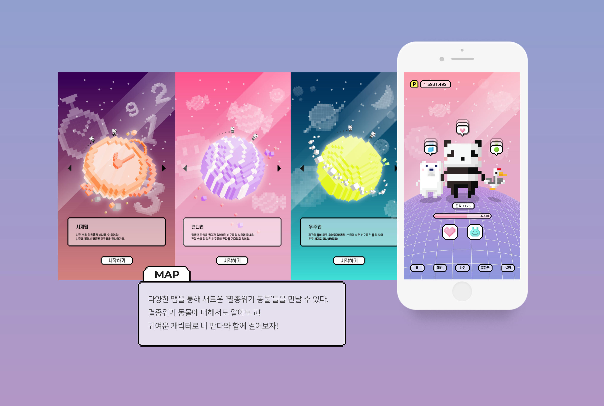

Panda Walk
지구도 살리고, 나도 건강해지고
Proposal
Panda Walk는 졸업전시프로젝트로 진행한 게임 어플리케이션 개발이였습니다.
실제 개발자와 함께 진행하면서, 걸음수에 따라 포인트가 쌓이고, 판다가 함께 걷는 화면을 적용한 프로젝트입니다.
Design issue
사용자들이 손 쉽게 즐길수 있는 귀여운 판다 컨셉에 맞게
디자인 컨셉을 '픽셀'로 정한뒤, 캐릭터부터 UI디자인을 진행했습니다.
